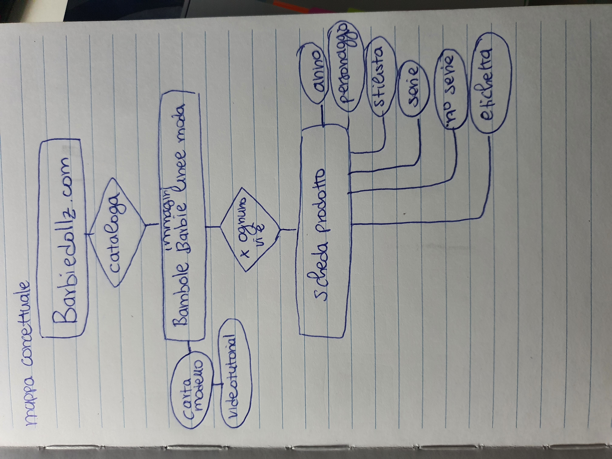
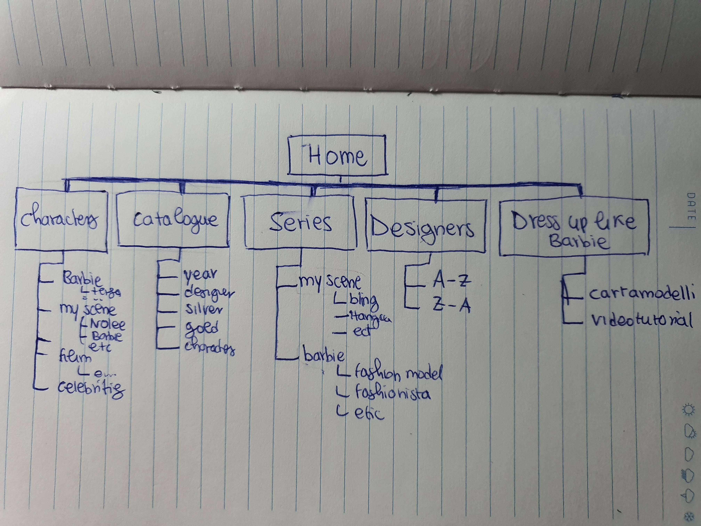
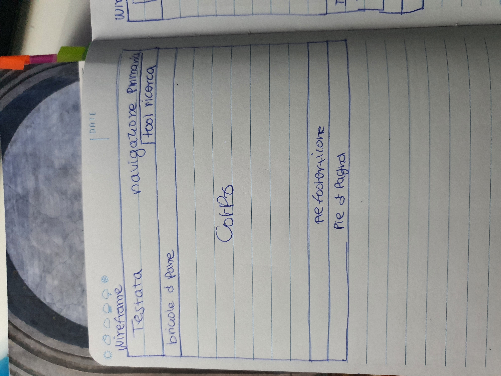
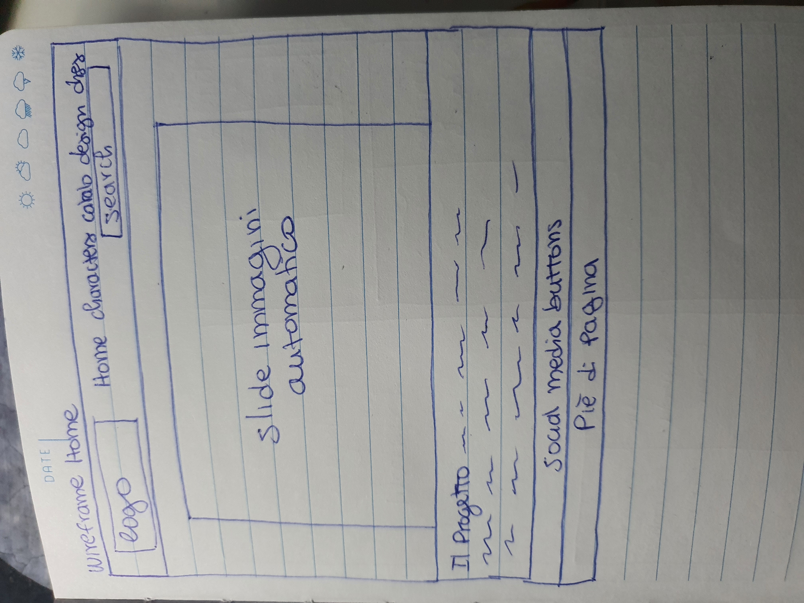
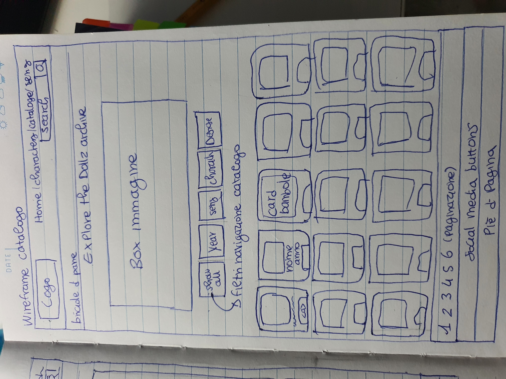
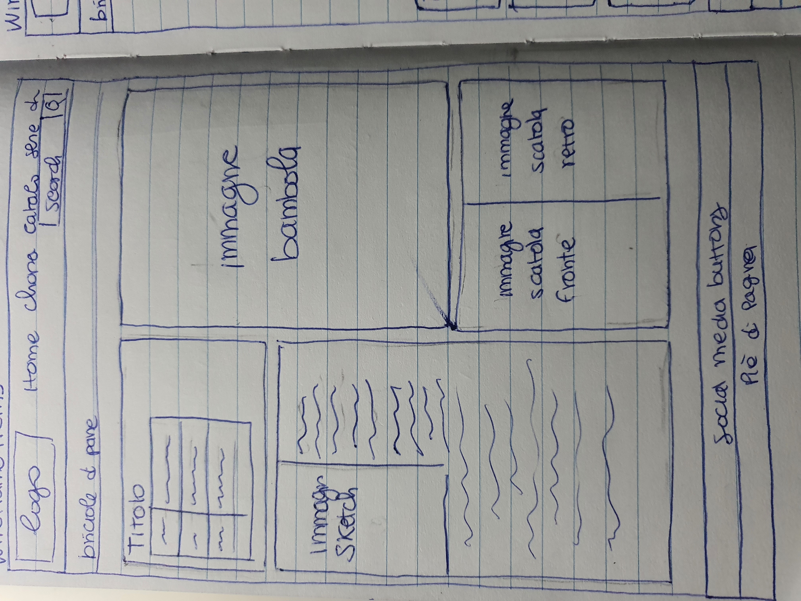

L'esistente-competitors: i siti principali su cui si possa fare una ricerca simile a barbiedollz.com sono principalmente due: Barbiepedia e Barbiemedia.
Barbiepedia è il maggiore sito concorrente per quanto riguarda tema e struttura. Il sito cataloga tutte le bambole uscite sotto il marchio Barbie®, ma non altri prodotti e contenuti che il marchio ha prodotto. Il sito crea pagine apposite per ogni articolo catalogato e fornisce una minima descrizione dell'elemento.
Al contrario di Barbiepedia.com, Barbiedollz.com ha l'obiettivo di catagolare solo le collezioni moda, escludendo ad esempio le serie "dreamhouse" ecc. Barbiepedia tra i suoi elementi descrittivi prevede anche dei link affiliati a piattaforme di vendita come Ebay® e Amazon®
Barbiemedia.com è un altro sito competitor. Questo non raccoglie soltanto le bambole, ma diversi contenuti multimediali organizzati principalmente con un criterio cronologico. Il sito risulta tuttavia insufficiente in quanto non restituisce all'utente una catalogazione di tipo logico; i diversi articoli mancano di descrizioni, inoltre la pagine dedicata all'archivio risulta spesso inraggiungibile.
Entrambi presentano un layout comprensibile grazie ai loro elementi di navigazione e a una struttura semplice. Entrambe fanno uso del colore rosa, prerogativo del marchio abbinato al bianco. I collegamenti ai social network sono visibili e riconoscibili.
Barbiedollz.com vuole mettere a disposizione dell'utente un sito completo e accessibile che riguardi le linee di moda della bambola Barbie. Rapprensenta in primis un archivio online stabile che possa permettere di catagolare in modo esaustivo e logico, con diversi filtri di ricerca e pagine appositamente create, i diversi articoli della bambola; infatti negli anni anche siti ufficiali del marchio mattel adibiti a questo ruolo sono stati disconnessi come anche i siti creati dai fan. L'archivio si arrichisce di informazioni sugli stilisti che hanno disegnato i vestiti delle sudette bambole e anche una sezione che permette di replicare i vestiti del giocattolo attraverso cartamodelli e videotutoriali.
Utente tipo: Barbiedollz si rivolge a un pubblico di misto di specialisti e utenti generici. I collezionisti non sono gli unici utenti tipo, infatti grazie anche alla sezione "dress up like barbie" che racchiude diversi cartamodelli e video tutoriali è possibile sia per un pubblico di amatore che di professionisti ricreare gli abiti indossati dalle bambole per progetti sartoriali com'è solito fare ma anche aumentarne le dimensioni per adattarsi al corpo umano.
Mappa concettuale:

Schema:

Wireframe:

Si è preferito optare per una navigazione di tipo primaria unita alla testata per non caricare ulteriormente l'utente di stimoli visivi, essendo principalemte un archivio di immagini.   L’usabilità del sito è definita dalle seguenti caratteristiche:
Linguaggi:
Metadati: come primo metadato ho inserito "charset='utf-8'", in modo da rendere i caratteri contenuti nel documento leggibili da più browser, e aumentarne quindi visibilità e portabilità. Nelle sezione head della home page ho inserito diversi metadati di Dublin Core: il DC è un insieme di metadati efficace sotto molti punti vista, primi tra tutti la reperibilità e la conservazione; questo grazie al fatto che nelle sue categorie rientrano le categorie di base di classificazione di un documento, come il titolo, l'autore, la data, l'oggetto della collezione, l'azienda che lo supporta o a cui è destinato il documento, la lingua in cui è scritto, i diritti.
Conservazione:
Strumenti di arricchimento: